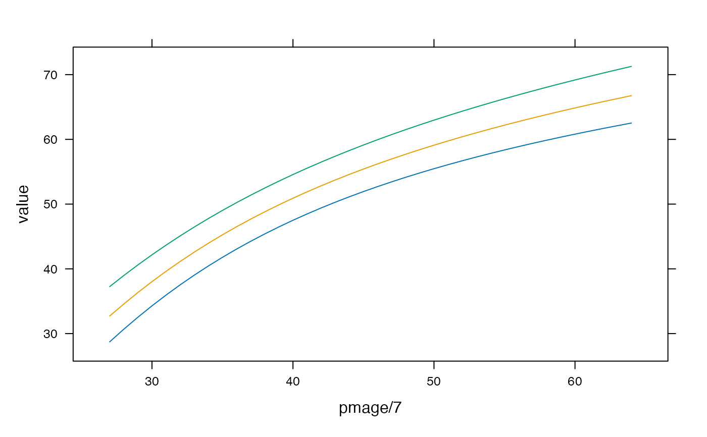

R/standard_igprepost.R
igprepost_zscore2var.RdConvert INTERGROWTH z-scores/centiles to postnatal growth measurements for preterm infants
igprepost_zscore2lencm(pmagedays, z = 0, sex = "Female") igprepost_zscore2wtkg(pmagedays, z = 0, sex = "Female") igprepost_zscore2hcircm(pmagedays, z = 0, sex = "Female") igprepost_centile2lencm(pmagedays, p = 50, sex = "Female") igprepost_centile2wtkg(pmagedays, p = 50, sex = "Female") igprepost_centile2hcircm(pmagedays, p = 50, sex = "Female")
| pmagedays | postmenstrual age in days |
|---|---|
| z | z-score(s) to convert |
| sex | "Male" or "Female" |
| p | centile(s) to convert (must be between 0 and 100) |
For gestational ages between 24 and 33 weeks, the INTERGROWTH very early preterm standard is used.
Postnatal growth standards for preterm infants: the Preterm Postnatal Follow-up Study of the INTERGROWTH-21st Project. Villar J, Giuliani F, Bhutta ZA, et al. Lancet Glob Health 2015; 3: e681–91.
igprepost_zscore2lencm(64 * 7, 0, sex = "Female")#> [1] 64.68446d <- expand.grid(centile = c(3, 50, 97), pmage = c(27:64) * 7) d$value <- igprepost_centile2lencm(d$pmage, d$centile, sex = "Male") lattice::xyplot(value ~ pmage / 7, groups = centile, data = d, type = "l")